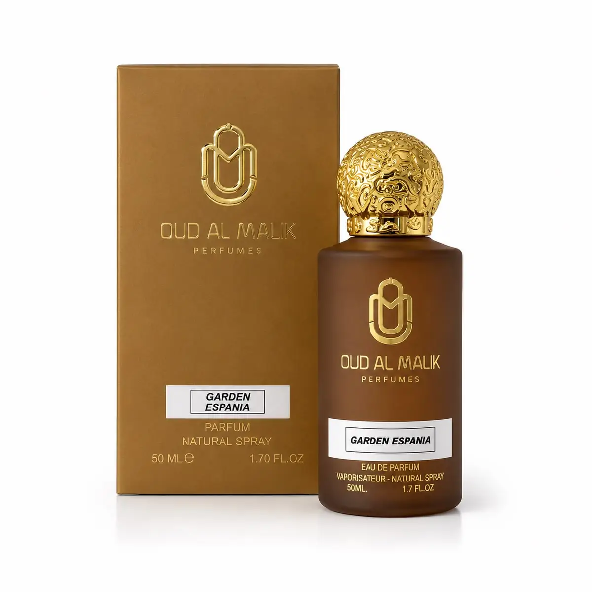

Un salon olfactif né d'une conviction : la clientèle sénégalaise mérite les plus grands parfums du monde — et sait les reconnaître.
Chapitre un
Le nom dit ce que nous faisons
Teranga — « l'hospitalité » en wolof — porte dans son nom ce que nous offrons : un accueil, un temps, une écoute. Nous ne vendons pas des flacons à la sauvette.
On entre, on s'assoit, on sent. Un parfum se choisit sur la peau, jamais sur une mouillette tendue à la hâte.

Chapitre deux
Chaque référence est vérifiée
Chaque parfum provient de circuits officiels. Ni contrefaçon, ni décant douteux : le flacon d'origine, son coffret, son lot.
Une maison entre en rayon pour un parfum précis, pas pour son nom. C'est pourquoi le catalogue reste court.
De la haute niche européenne aux ouds d'Orient chers à notre région, nous tenons les deux bouts d'une même histoire.
Ici, l'oud n'a pas attendu les maisons occidentales : on le brûlait en copeaux pour les baptêmes et les mariages. Nos clients connaissent la matière avant d'en connaître la marque.
Chapitre quatre
Tenir sous notre chaleur
La chaleur de Dakar amplifie un parfum pendant une heure, puis l'épuise. Une eau de toilette qui tient un après-midi en Europe s'efface ici avant midi.
Nous privilégions les extraits et les eaux de parfum, et nous le disons franchement quand une référence ne tiendra pas sous notre climat.